🧪 Alchimie & Potions (Slay the Spire 2)
Total : 63 potions répertoriées | Patch :
v0.111.0 Beta
Toutes les fioles magiques, raretés, effets et descriptions.
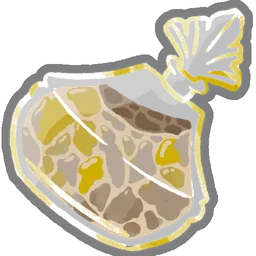
Ambre gris (AMBERGRIS)
- Rareté :
Event| Cible :AnyPlayer - Effet : Récupérez 50% de vos PV Max. Si vous consommez la potion pendant un combat, jouez un tour supplémentaire.
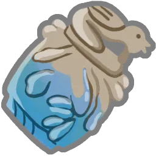
Eau cendrée (ASHWATER)
- Rareté :
Uncommon| Cible :AnyPlayer - Effet : Épuisez autant de cartes de votre Main que vous souhaitez.
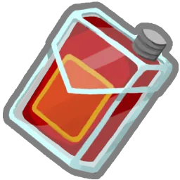
Potion d'attaque (ATTACK_POTION)
- Rareté :
Common| Cible :AnyPlayer - Effet : Choisissez 1 Attaque parmi 3 aléatoires à ajouter à votre Main. Elle coûte 0 ce tour.
Jus de coléoptère (BEETLE_JUICE)
- Rareté :
Rare| Cible :AnyEnemy - Effet : Les attaques de l'ennemi infligent 30% de dégâts en moins pendant les 4 prochains tours.
Bénédiction de la forge (BLESSING_OF_THE_FORGE)
- Rareté :
Uncommon| Cible :AnyPlayer - Effet : Améliorez toutes les cartes de votre Main pour le restant du combat.
Potion d'armure (BLOCK_POTION)
- Rareté :
Common| Cible :AnyPlayer - Effet : Gagnez 12 d'Armure.
Potion sanguine (BLOOD_POTION)
- Rareté :
Common| Cible :AnyPlayer - Effet : Récupérez 20% de vos PV Max.
Infusion osseuse (BONE_BREW)
- Rareté :
Uncommon| Cible :AnyPlayer - Effet : Invoquez pour 15.
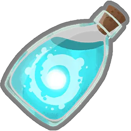
Potentiel en bouteille (BOTTLED_POTENTIAL)
- Rareté :
Rare| Cible :AnyPlayer - Effet : Mélangez TOUTES vos cartes dans votre Pioche. Piochez 5 cartes.
Extrait de lucidité (CLARITY)
- Rareté :
Uncommon| Cible :AnyPlayer - Effet : Piochez 1 carte. Au début de vos 3 prochains tours, piochez 1 carte supplémentaire.
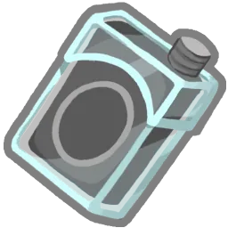
Potion incolore (COLORLESS_POTION)
- Rareté :
Common| Cible :AnyPlayer - Effet : Choisissez 1 carte Incolore parmi 3 aléatoires à ajouter à votre Main. Elle coûte 0 ce tour.
Concoction cosmique (COSMIC_CONCOCTION)
- Rareté :
Rare| Cible :AnyPlayer - Effet : Ajoutez 3 cartes Incolores Améliorées à votre Main.
Potion de ruse (CUNNING_POTION)
- Rareté :
Uncommon| Cible :AnyPlayer - Effet : Ajoutez 3 Surins Améliorés à votre Main.
Remède universel (CURE_ALL)
- Rareté :
Uncommon| Cible :AnyPlayer - Effet : Gagnez 1. Piochez 2 cartes.
Potion de dextérité (DEXTERITY_POTION)
- Rareté :
Common| Cible :AnyPlayer - Effet : Gagnez 2 de Dextérité.
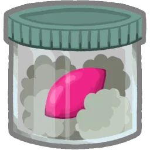
Chaos distillé (DISTILLED_CHAOS)
- Rareté :
Rare| Cible :AnyPlayer - Effet : Jouez les 3 cartes du dessus de votre Pioche.
Goutte de prescience (DROPLET_OF_PRECOGNITION)
- Rareté :
Rare| Cible :AnyPlayer - Effet : Choisissez une carte de votre Pioche et ajoutez-la à votre Main.
Duplicateur (DUPLICATOR)
- Rareté :
Uncommon| Cible :AnyPlayer - Effet : La prochaine carte que vous jouez ce tour est jouée une fois de plus.
Potion d'énergie (ENERGY_POTION)
- Rareté :
Common| Cible :AnyPlayer - Effet : Gagnez 2.
Décoction entropique (ENTROPIC_BREW)
- Rareté :
Rare| Cible :AnyPlayer - Effet : Remplissez vos emplacements de potion libres avec des potions aléatoires.
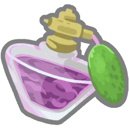
Essence ténébreuse (ESSENCE_OF_DARKNESS)
- Rareté :
Rare| Cible :AnyPlayer - Effet : Canalisez un Orbe obscur pour chacun de vos emplacements d'Orbe.
Ampoule explosive (EXPLOSIVE_AMPOULE)
- Rareté :
Common| Cible :AllEnemies - Effet : Infligez 10 dégâts à TOUS les ennemis.
Fée en bouteille (FAIRY_IN_A_BOTTLE)
- Rareté :
Rare| Cible :Self - Effet : Si vos PV atteignent 0, défaussez cette potion et récupérez 30 % de vos PV Max.
Potion incendiaire (FIRE_POTION)
- Rareté :
Common| Cible :AnyEnemy - Effet : Infligez 20 dégâts.
Potion de vantardise (FLEX_POTION)
- Rareté :
Common| Cible :AnyPlayer - Effet : Gagnez 5 de Force. À la fin de votre tour, perdez 5 de Force.
Potion de focalisation (FOCUS_POTION)
- Rareté :
Common| Cible :AnyPlayer - Effet : Gagnez 2 de Focalisation.
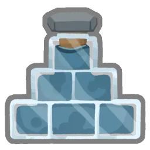
Fortifiant (FORTIFIER)
- Rareté :
Uncommon| Cible :AnyPlayer - Effet : Triplez votre Armure.
Potion infecte (FOUL_POTION)
- Rareté :
Event| Cible :Combat - Effet : Infligez 12 dégâts à TOUS les joueurs et les ennemis. Peut être jetée sur le Marchand pour 100 Pièces d'or.
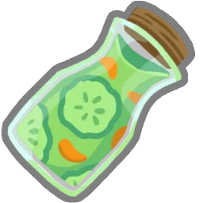
Jus de fruits (FRUIT_JUICE)
- Rareté :
Rare| Cible :AnyPlayer - Effet : Gagnez 5 PV Max.
Huile de poissâme (FYSH_OIL)
- Rareté :
Uncommon| Cible :AnyPlayer - Effet : Gagnez 1 de Force et 1 de Dextérité.
Décoction du parieur (GAMBLERS_BREW)
- Rareté :
Uncommon| Cible :AnyPlayer - Effet : Défaussez autant de cartes que vous le souhaitez, puis piochez-en le même nombre.
Fantôme dans un bocal (GHOST_IN_A_JAR)
- Rareté :
Rare| Cible :AnyPlayer - Effet : Gagnez Intangible (1).
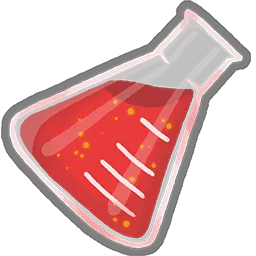
Potion de géantification (GIGANTIFICATION_POTION)
- Rareté :
Rare| Cible :AnyPlayer - Effet : La prochaine Attaque que vous jouez inflige le triple de dégâts.
Potion luminescente (GLOWWATER_POTION)
- Rareté :
Event| Cible :AnyPlayer - Effet : Épuisez votre Main. Piochez 10 cartes.
Cœur de fer (HEART_OF_IRON)
- Rareté :
Uncommon| Cible :AnyPlayer - Effet : Gagnez 7 de Blindage.
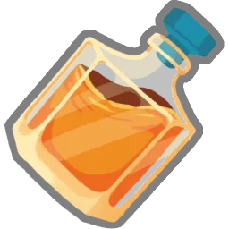
Courage du roi (KINGS_COURAGE)
- Rareté :
Uncommon| Cible :AnyPlayer - Effet : Forgez pour 15.
Bronze liquide (LIQUID_BRONZE)
- Rareté :
Uncommon| Cible :AnyPlayer - Effet : Gagnez 3 Épines.
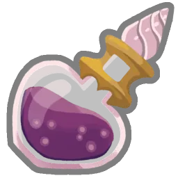
Souvenirs liquides (LIQUID_MEMORIES)
- Rareté :
Rare| Cible :AnyPlayer - Effet : Ajoutez une carte de votre Défausse à votre Main. Elle coûte 0 ce tour.
Philtre chanceux (LUCKY_TONIC)
- Rareté :
Rare| Cible :AnyPlayer - Effet : Gagnez 1 Tampon.
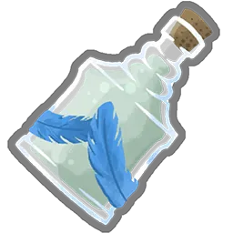
Don de Mazaleth (MAZALETHS_GIFT)
- Rareté :
Rare| Cible :AnyPlayer - Effet : Gagnez 1 Rituel.
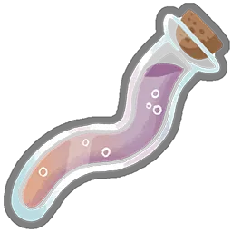
Acide orobique (OROBIC_ACID)
- Rareté :
Rare| Cible :AnyPlayer - Effet : Ajoutez une Attaque, une Compétence et un Pouvoir aléatoires à votre Main. Ils coûtent 0 ce tour.
Potion de poison (POISON_POTION)
- Rareté :
Common| Cible :AnyEnemy - Effet : Appliquez 6 de Poison.
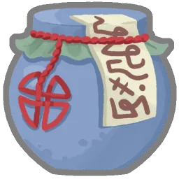
Goules en bouteille (POT_OF_GHOULS)
- Rareté :
Rare| Cible :AnyPlayer - Effet : Ajoutez 2 Âmes à votre Main.
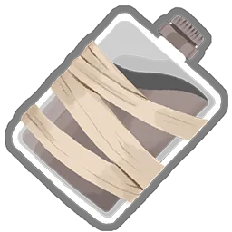
Potion paralysante (POTION_OF_BINDING)
- Rareté :
Uncommon| Cible :AllEnemies - Effet : Appliquez Affaibli (1) et Vulnérable (1) à TOUS les ennemis.
Potion de stockage (POTION_OF_CAPACITY)
- Rareté :
Uncommon| Cible :AnyPlayer - Effet : Gagnez 2 Emplacements d'Orbe.
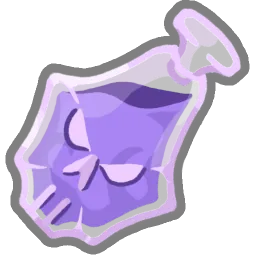
Potion macabre (POTION_OF_DOOM)
- Rareté :
Common| Cible :AnyEnemy - Effet : Appliquez 33 de Fatalité.
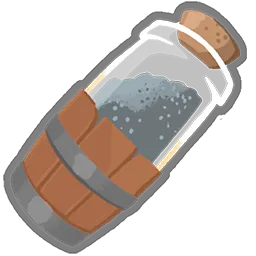
Poudre funeste (POWDERED_DEMISE)
- Rareté :
Uncommon| Cible :AnyEnemy - Effet : L'ennemi perd 9 PV à la fin de chacun de ses tours.
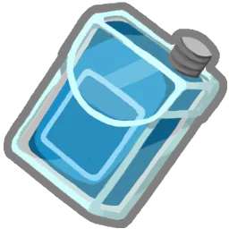
Potion de pouvoir (POWER_POTION)
- Rareté :
Common| Cible :AnyPlayer - Effet : Choisissez 1 Pouvoir parmi 3 aléatoires à ajouter à votre Main. Il coûte 0 ce tour.
Lampée de radiance (RADIANT_TINCTURE)
- Rareté :
Uncommon| Cible :AnyPlayer - Effet : Gagnez 1. Gagnez au début de vos 3 prochains tours.
Potion de régénération (REGEN_POTION)
- Rareté :
Uncommon| Cible :AnyPlayer - Effet : Gagnez 5 de Régénération.
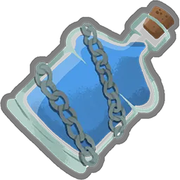
Potion d'entrave (SHACKLING_POTION)
- Rareté :
Rare| Cible :AllEnemies - Effet : TOUS les ennemis perdent 7 de Force ce tour.
Navire en bouteille (SHIP_IN_A_BOTTLE)
- Rareté :
Rare| Cible :AnyPlayer - Effet : Gagnez 10 d'Armure. Au prochain tour, gagnez 10 d'Armure.
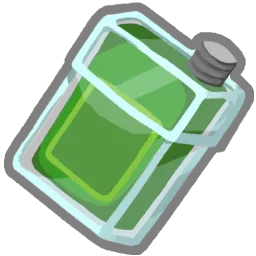
Potion de compétence (SKILL_POTION)
- Rareté :
Common| Cible :AnyPlayer - Effet : Choisissez 1 Compétence parmi 3 aléatoires à ajouter à votre Main. Elle coûte 0 ce tour.
Huile de geckobra (SNECKO_OIL)
- Rareté :
Rare| Cible :AnyPlayer - Effet : Piochez 7 cartes. Les cartes dans votre Main ont un coût aléatoire pendant ce tour.
Ragoût militaire (SOLDIERS_STEW)
- Rareté :
Rare| Cible :AnyPlayer - Effet : Toutes les cartes dont le nom contient Frappe gagnent Écho (1) pendant ce combat.
Potion de vitesse (SPEED_POTION)
- Rareté :
Common| Cible :AnyPlayer - Effet : Gagnez 5 de Dextérité. À la fin de votre tour, perdez 5 de Dextérité.
Sérum de stabilité (STABLE_SERUM)
- Rareté :
Uncommon| Cible :AnyPlayer - Effet : Retenez votre Main pendant les 2 prochains tours.
Potion d'étoiles (STAR_POTION)
- Rareté :
Common| Cible :AnyPlayer - Effet : Gagnez 3.
Potion de force (STRENGTH_POTION)
- Rareté :
Common| Cible :AnyPlayer - Effet : Gagnez 2 de Force.
Potion de célérité (SWIFT_POTION)
- Rareté :
Common| Cible :AnyPlayer - Effet : Piochez 3 cartes.
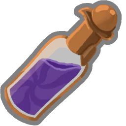
Goutte de folie (TOUCH_OF_INSANITY)
- Rareté :
Uncommon| Cible :AnyPlayer - Effet : Choisissez une carte de votre Main. Elle coûte 0 pour le restant du combat.
Potion de vulnérabilité (VULNERABLE_POTION)
- Rareté :
Common| Cible :AnyEnemy - Effet : Appliquez Vulnérable (3).
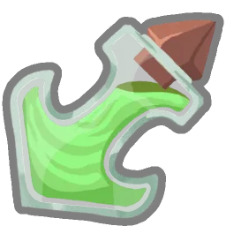
Potion d'affaiblissement (WEAK_POTION)
- Rareté :
Common| Cible :AnyEnemy - Effet : Appliquez Affaibli (3).